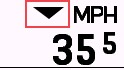
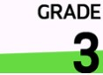
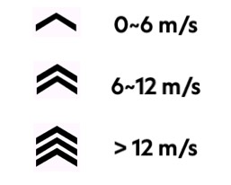
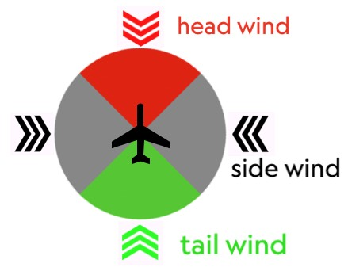
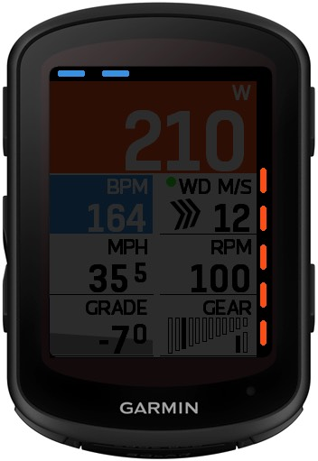
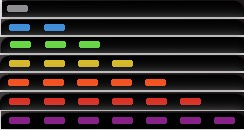

Modulbeschreibung¶
I Echtzeit-Überwachungsdaten¶
1. Aktuelle Leistung¶
Zeigt die aktuelle Radleistung in Echtzeit an.
Farben
Dieses Modul kann Hintergrundfarben anzeigen. Farbsequenzen können in der ConnectIQ App zwischen zwei Stilen gewählt werden. Benutzer können jedoch einzelne Farben oder Zonenbereiche nicht anpassen.
- Garmin-Stil: Grau-Blau-Grün-Gelb-Orange-Rot-Lila (Zone1~Zone7)
- Wahoo-Stil: Grau-Dunkelblau-Hellblau-Grün-Gelb-Orange-Rot (Zone1~Zone7)
2. Aktuelle Geschwindigkeit¶
Zeigt die aktuelle Radgeschwindigkeit an. Die Einheit entspricht den Benutzereinstellungen in Garmin Connect (km/h/mph).
Durchschnittsgeschwindigkeitsanzeige¶
Dies ist eine Einstellung, die ein- oder ausgeschaltet werden kann, um die aktuelle Geschwindigkeit mit der Durchschnittsgeschwindigkeit innerhalb des aktuellen Geschwindigkeitsmoduls zu vergleichen. Sie kann in der ConnectIQ App eingestellt werden. Es gibt zwei Anzeigemodi: "Pfeil" und "Hintergrund".
- "Pfeil"
- Nach oben: Über der Durchschnittsgeschwindigkeit
- Nach unten: Unter der Durchschnittsgeschwindigkeit
- Nicht angezeigt: Gleich der Durchschnittsgeschwindigkeit oder Fahrt noch nicht gestartet
- "Hintergrund"
- Rot: Unter der Durchschnittsgeschwindigkeit
- Grün: Über der Durchschnittsgeschwindigkeit
3. Aktuelle Herzfrequenz¶
Zeigt die Herzfrequenzdaten in Echtzeit an.
Farben
Dieses Modul kann Hintergrundfarben einstellen. Farbsequenzen können in der ConnectIQ App zwischen zwei Stilen gewählt werden. Benutzer können jedoch einzelne Farben oder Zonenbereiche nicht anpassen.
- Garmin-Stil: Grau-Grau-Blau-Grün-Gelb-Rot (<Zone1, Zone1~Zone5)
- Wahoo-Stil: Grau-Blau-Grün-Gelb-Orange-Rot (<Zone1, Zone1~Zone5)
4. Aktuelle Trittfrequenz¶
Zeigt den Echtzeitwert der Trittfrequenz an.
5. Aktuelle Höhe¶
Zeigt die aktuelle Höhe an. Die Einheit entspricht den Benutzereinstellungen in Garmin Connect (m/ft).
6. Aktuelle Steigung*¶
Zeigt die aktuelle Steigung an. *Garmin stellt keine offizielle Datenschnittstelle zur Verfügung, daher können berechnete Daten ungenau oder fehlerhaft sein.
Farben
Dieses Modul kann Hintergrundfarben anzeigen. Die Farben ändern sich entsprechend der Steigung, aber Benutzer können Farben oder Steigungsbereiche nicht anpassen.
| Beispiel |  | |||||
|---|---|---|---|---|---|---|
| Steigungsbereich | < 0,5% | 0,5%~3,99% | 4%~7,99% | 8%~11,99% | 12%~19,99% | > 20% |
II Durchschnittliche und kumulierte Daten¶
7. Durchschnittliche Leistung 3s*¶
Zeigt die durchschnittliche Leistung der letzten 3 Sekunden an. Farbdisplay wie Echtzeitleistung.
*Garmin stellt keine offizielle Datenschnittstelle zur Verfügung, daher können berechnete Daten ungenau oder fehlerhaft sein.
8. 5s Durchschnittsleistung*¶
Zeigt die durchschnittliche Leistung der letzten 5 Sekunden an. Farbdisplay wie Echtzeitleistung.
*Garmin stellt keine offizielle Datenschnittstelle zur Verfügung, daher können berechnete Daten ungenau oder fehlerhaft sein
9. Durchschnittliche Leistung (10 Sek.)*¶
Zeigt die durchschnittliche Leistung der letzten 10 Sekunden an. Farbliche Anzeige wie Echtzeit-Leistung.
*Garmin stellt keine offizielle Datenschnittstelle zur Verfügung, daher können berechnete Daten ungenau oder fehlerhaft sein
10. Durchschnittliche Leistung (Runde)*¶
Zeigt die durchschnittliche Leistung der aktuellen Runde an.
*Garmin stellt keine offizielle Datenschnittstelle zur Verfügung, daher können berechnete Daten ungenau oder fehlerhaft sein
11. Durchschnittsgeschwindigkeit¶
Zeigt die Durchschnittsgeschwindigkeit der aktuellen Aktivität an.
12. Durchschnittliche Herzfrequenz¶
Zeigt die durchschnittliche Herzfrequenz der aktuellen Aktivität an.
13. Aktivitätsdauer¶
Zeigt die Dauer der aktuellen Aktivität an.
14. Rundendauer*¶
Zeigt die Dauer der aktuellen Runde an.
*Garmin stellt keine offizielle Datenschnittstelle zur Verfügung, daher können berechnete Daten ungenau oder fehlerhaft sein
15. Distanz¶
Zeigt die zurückgelegte Gesamtdistanz der aktuellen Aktivität an.
16. Gesamtanstieg¶
Zeigt den gesamten Höhenanstieg der aktuellen Aktivität an.
17. Gesamtabstieg¶
Zeigt den gesamten Höhenabstieg der aktuellen Aktivität an.
18. Durchschnittliche Herzfrequenz (Runde)*¶
Zeigt die durchschnittliche Herzfrequenz der aktuellen Runde an.
*Garmin stellt keine offizielle Datenschnittstelle zur Verfügung, daher können berechnete Daten ungenau oder fehlerhaft sein
19. Gesamtarbeit (KJ)*¶
Zeigt die Gesamtarbeit der aktuellen Aktivität in Kilojoule an.
*Garmin stellt keine offizielle Datenschnittstelle zur Verfügung, daher können berechnete Daten ungenau oder fehlerhaft sein
20. Rundendistanz*¶
Zeigt die Distanz der aktuellen Runde an.
*Garmin stellt keine offizielle Datenschnittstelle zur Verfügung, daher können berechnete Daten ungenau oder fehlerhaft sein
21. Durchschnittliche Trittfrequenz*¶
Zeigt die durchschnittliche Trittfrequenz der aktuellen Aktivität an.
*Garmin stellt keine offizielle Datenschnittstelle zur Verfügung, daher können berechnete Daten ungenau oder fehlerhaft sein
22. Durchschnittsgeschwindigkeit (Runde)¶
Zeigt die Durchschnittsgeschwindigkeit der aktuellen Runde an.
23. Kalorien*¶
Zeigt die während der aktuellen Aktivität verbrauchten Kalorien an.
*Garmin stellt keine offizielle Datenschnittstelle zur Verfügung, daher können berechnete Daten ungenau oder fehlerhaft sein
III Maximalwerte¶
24. Maximale Leistung¶
Zeigt die maximale Leistung der aktuellen Aktivität an.
25. Maximale Herzfrequenz¶
Zeigt die maximale Herzfrequenz der aktuellen Aktivität an.
26. Maximale Geschwindigkeit¶
Zeigt die maximale Geschwindigkeit der aktuellen Aktivität an.
27. Maximale Trittfrequenz¶
Zeigt die maximale Trittfrequenz der aktuellen Aktivität an.
IV Trainingsmetriken¶
28. Aktuelles Leistungsgewicht¶
Zeigt das Echtzeit-Leistungsgewicht der aktuellen Aktivität in W/kg an. Die Leistung stammt von der Eingabe auf der MyGahoo-Einstellungsseite, das Gewicht von der Konfiguration auf der Garmin-Profilseite.
29. Durchschnittliche Leistungsgewicht-Ratio (3s)*¶
Zeigt die durchschnittliche Leistungsgewicht-Ratio der letzten 3 Sekunden in W/kg an.
*Garmin stellt keine offizielle Datenschnittstelle bereit, daher können die berechneten Daten Ungenauigkeiten oder Fehler enthalten.
30. Durchschnittliche Leistungsgewicht-Ratio (10s)*¶
Zeigt die durchschnittliche Leistungsgewicht-Ratio der letzten 10 Sekunden in W/kg an.
*Garmin stellt keine offizielle Datenschnittstelle bereit, daher können die berechneten Daten Ungenauigkeiten oder Fehler enthalten.
31. Durchschnittliche Leistungsgewicht-Ratio (Runde)*¶
Zeigt die durchschnittliche Leistungsgewicht-Ratio der aktuellen Runde in W/kg an.
*Garmin stellt keine offizielle Datenschnittstelle bereit, daher können die berechneten Daten Ungenauigkeiten oder Fehler enthalten.
32. NP™ (Normalisierte Leistung)*¶
Zeigt die normalisierte Leistung für die aktuelle Aktivität an.
Datenverlustgefahr
Wenn Sie das MyGahoo-Feld während der Aktivität erneut hinzufügen oder in andere Fahrmodi wechseln, werden die Daten in diesem Modul gelöscht. (Die von Garmin selbst aufgezeichnete Aktivität wird jedoch nicht beeinträchtigt, nur MyGahoo beginnt erneut von Null mit der Datenerfassung).
™Normalisierte Leistung (NP) und Training Stress Score (TSS) sind eingetragene Warenzeichen von Peaksware, LLC.
*Garmin stellt keine offizielle Datenschnittstelle bereit, daher können die berechneten Daten Ungenauigkeiten oder Fehler enthalten.
33. TSS™ (Training Stress Score)*¶
Zeigt den Training Stress Score für die aktuelle Aktivität an.
Datenverlustgefahr
Wenn Sie das MyGahoo-Feld während der Aktivität erneut hinzufügen oder nach dem Aufrufen anderer Fahrmodi in den aktuellen Modus zurückkehren, werden die Daten in diesem Modul gelöscht. (Die von Garmin selbst aufgezeichneten Aktivitäten bleiben jedoch unberührt; MyGahoo beginnt lediglich, diese Daten wieder von Null an zu sammeln).
™Normalized Power (NP) und Training Stress Score (TSS) sind eingetragene Marken von Peaksware, LLC.
*Garmin stellt keine offizielle Datenschnittstelle bereit, daher können die berechneten Daten Ungenauigkeiten oder Fehler aufweisen.
34. W'Balance*¶
Zeigt W'Balance (W prime balance) für die aktuelle Aktivität an. Dies erfordert eine Vordefinition von CP (Critical Power) und W' (W Prime). Für wissenschaftliche Erklärungen gibt es viele Artikel oder Videos, die erklären, was es ist.
Während der Aktivität kann dieses Feld grün oder rot sein. Wenn es grün ist, bedeutet das, dass Ihre aktuelle Leistung unter CP liegt, mit anderen Worten, Sie "erholen" sich. Umgekehrt, wenn es rot ist, bedeutet das, dass Sie verbrauchen.
Das aktuelle mathematische Modell verwendet das Differentialmodell von Froncioni / Clarke:
W′bal = W′bal + (CP - P) * (W′ - W′bal) / W′ wenn P > CP
W′bal = W′bal + (CP - P) wenn P < CP
*Garmin stellt keine offizielle Datenschnittstelle zur Verfügung, daher können berechnete Daten ungenau oder fehlerhaft sein
V Geräteinformationen¶
35. Gang (Zähne)¶
Zeigt die Anzahl der Zähne des aktuellen Kettenblatts/der aktuellen Kassette an. Z. B. 52/13
36. Gang (Index)¶
Zeigt die aktuelle Kettenblatt-/Kassettenindexnummer an. Z. B. 1/7
37. Übersetzungsverhältnis¶
Zeigt das aktuelle Übersetzungsverhältnis von Kettenblatt geteilt durch Kassettenzähne an. Beispiel: 4,02
38. Gang-Diagramm¶
Stellt Ganginformationen grafisch dar.
VI Navigationsinformationen¶
39. Entfernung zum Ziel¶
Zeigt die verbleibende Entfernung zum Ziel an.
40. Geschätzte Zeit zum Ziel*¶
Zeigt die geschätzte verbleibende Zeit bis zum Erreichen des Ziels an. Dies wird anhand der bisherigen Durchschnittsgeschwindigkeit geschätzt, und die Zahl wird 10 Sekunden nach Aktivitätsbeginn angezeigt, um starke Schwankungen am Anfang zu vermeiden.
*Garmin stellt keine offizielle Datenschnittstelle zur Verfügung, daher können berechnete Daten ungenau oder fehlerhaft sein
41. Geschätzte Ankunftszeit*¶
Zeigt die geschätzte Ankunftszeit am Ziel an. Dies wird anhand der bisherigen Durchschnittsgeschwindigkeit geschätzt, und die Zahl wird 10 Sekunden nach Aktivitätsbeginn angezeigt, um starke Schwankungen am Anfang zu vermeiden.
*Garmin stellt keine offizielle Datenschnittstelle zur Verfügung, daher können berechnete Daten ungenau oder fehlerhaft sein
VII Datenanalyse¶
42. Echtzeit-Links-Rechts-Balance¶
Zeigt die aktuelle Links-Rechts-Leistungsbalance an. Wird als Prozentwert ohne % Zeichen angezeigt, z. B.: 52-48
43. 3s Durchschnitt Links-Rechts-Balance*¶
Zeigt das durchschnittliche Links-Rechts-Leistungsverhältnis über 3 Sekunden an.
*Garmin bietet keine offizielle Datenschnittstelle, daher können die berechneten Daten Ungenauigkeiten oder Fehler enthalten.
44. Leistungszonen-Histogramm*¶
Zeigt die Zeitverteilung über verschiedene Leistungszonen an.
Datenverlustgefahr
Wenn Sie das MyGahoo-Feld während der Aktivität erneut hinzufügen oder nach dem Wechsel in andere Fahrmodi in den aktuellen Modus zurückkehren, werden die Daten in diesem Modul gelöscht. (Die von Garmin selbst aufgezeichnete Aktivität wird jedoch nicht beeinträchtigt, nur MyGahoo beginnt erneut von Null mit der Datenerfassung).
*Garmin bietet keine offizielle Datenschnittstelle, daher können die berechneten Daten Ungenauigkeiten oder Fehler enthalten.
45. Herzfrequenzzonen-Histogramm*¶
Zeigt die Zeitverteilung über verschiedene Herzfrequenzzonen an.
Datenverlustgefahr
Wenn Sie das MyGahoo-Feld während der Aktivität erneut hinzufügen oder nach dem Wechsel in andere Fahrmodi in den aktuellen Modus zurückkehren, werden die Daten in diesem Modul gelöscht. (Die von Garmin selbst aufgezeichnete Aktivität wird jedoch nicht beeinträchtigt, nur MyGahoo beginnt erneut von Null mit der Datenerfassung).
*Garmin bietet keine offizielle Datenschnittstelle, daher können die berechneten Daten Ungenauigkeiten oder Fehler enthalten.
VI Umweltinformationen¶
46. Batterie*¶
Zeigt den Batteriestand des Geräts an.
*Garmin stellt keine offizielle Datenschnittstelle zur Verfügung, daher können berechnete Daten ungenau oder fehlerhaft sein
47. Temperatur¶
Zeigt die aktuelle Umgebungstemperatur an.
48. Uhr¶
Zeigt die aktuelle Uhrzeit an.
49. Wind*¶
Zeigt die aktuelle Windgeschwindigkeit und die relative/absolute Windrichtung an.
*Garmin bietet keine offizielle Datenschnittstelle, daher können die berechneten Daten Ungenauigkeiten oder Fehler enthalten.
Windgeschwindigkeits-Einheiten¶
- m/s: Meter pro Sekunde
- KPH: Kilometer pro Stunde
- MPH: Meilen pro Stunde
- Beaufort-Skala: Windstärkeskala, 0~12 Stufen
Windgeschwindigkeitsstufe¶
Die Windgeschwindigkeitsstufe wird durch die Anzahl der Pfeile angezeigt, wobei unterschiedliche Anzahlen unterschiedlichen Windgeschwindigkeiten entsprechen, wie in der Abbildung unten gezeigt. Wenn die ausgewählte Windgeschwindigkeitseinheit nicht m/s ist, wird die Pfeilanzahl dennoch anhand der korrekten Windgeschwindigkeit und nicht anhand der angezeigten Zahl berechnet.

Absolute/Relative Windrichtung¶
- Absolute Richtung: Windrichtung aus der Wettervorhersage, unabhängig von der Fahrrichtung
- Relative Richtung: Der relative Winkel zwischen der aktuellen Fahrrichtung und der Windrichtung. Beispiel: Fahrtrichtung Westen, absolute Windrichtung Nord nach Süd, die relative Windrichtung ist von rechts nach links.
Farben der Windrichtung¶
Bei der Anzeige der relativen Windrichtung werden die Pfeile je nach Windwinkel farbig dargestellt. Rot zeigt Gegenwind an (relativer Wind von 45° links vorne bis 45° rechts vorne); Grün zeigt Rückenwind an (relativer Wind von 45° links hinten bis 45° rechts hinten); Schwarz zeigt Seitenwind an.

Konfiguration¶
Für eine optimale Anzeige muss das Windmodul in der ConnectIQ App konfiguriert werden. Weitere Informationen finden Sie im Modul Wetterkonfiguration.
VII Virtuelle LEDs¶
Virtuelle LEDs können an den Bildschirmrändern konfiguriert werden. Benutzer können LEDs an verschiedenen Positionen verwenden, um unterschiedliche Informationen anzuzeigen.

50. Echtzeit-Leistung¶
Virtuelle LEDs zeigen die Menge und Farbe für jede Zone an (Farbstil im Beispiel unten auf Garmin-Stil eingestellt).

51. Durchschnittliche Leistung (3s)¶
Wie oben.
52. Herzfrequenz-Zonen¶
Virtuelle LEDs zeigen die Menge und Farbe für jede Zone an (Farbstil im Beispiel unten auf Garmin-Stil eingestellt).
53. Durchschnittliche Geschwindigkeitsanzeige¶
Virtuelle LEDs zeigen das Verhältnis zwischen aktueller und durchschnittlicher Geschwindigkeit an. Rot zeigt an, dass man hinterherhinkt (unter dem Durchschnitt), Blau, dass man führt (über dem Durchschnitt).
Jede LED repräsentiert eine Vor- oder Rücklage von 10%, wie in der Tabelle unten gezeigt. Die Tabelle verwendet die Führung als Beispiel; die Rücklage folgt dem gleichen Prinzip.
| Beispiel | Bedeutung |
|---|---|
| Gleich der Durchschnittsgeschwindigkeit | |
 |
Aktueller Vorsprung < 10% |
| 10% < Aktueller Vorsprung < 20% | |
| Aktueller Vorsprung > 20% |
54. Durchschnittliche Leistungsanzeige¶
Virtuelle LEDs zeigen das Verhältnis zwischen aktueller und durchschnittlicher Leistung an. Die Farben haben die gleiche Bedeutung wie oben, aber jede LED repräsentiert eine Vor- oder Rücklage von 20%. Die Tabelle verwendet die Führung als Beispiel; die Rücklage folgt dem gleichen Prinzip.
| Beispiel | Bedeutung |
|---|---|
| Gleich der durchschnittlichen Leistung | |
|
Aktuelle Führung < 20% |
| 20% < Aktuelle Führung < 40% | |
| Aktuelle Führung > 40% |
55. Anzeige für die Links-Rechts-Balance¶
Virtuelle LEDs zeigen die Links-Rechts-Balance der aktuellen Pedalleistung an. Jede LED repräsentiert einen Offset von 5% für eine Seite. Die Tabelle verwendet rechtslastiges Treten als Beispiel; das Gegenteil folgt dem gleichen Prinzip.
Zusätzlich wird bei empfangenen Links-Rechts-Balancewerten von 100-0 oder 0-100 ein Fehlerzustand angezeigt. Diese Situation tritt in der Regel aufgrund einer Trennung einer Seite des doppelseitigen Leistungsmessers oder einer momentanen Krafteinwirkung beim ersten Treten auf.
| Beispiel | L - R |
|---|---|
 |
50% - 50% |
| 45~50% - 50~55% (ohne 55%) | |
| 40~45% - 55~60% (ohne 60%) | |
| ≤40% - ≥60% | |
| 0%-100% (oder 100%-0%) |
56. 3s Links-Rechts-Balanceanzeige¶
Wie oben.